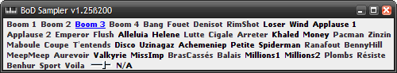

Sampler

What is it?
BoD Sampler is a small program to quickly play a small sound clip ("sample", or "jingle") from a collection.
You can use it for example at the office to play funny sounds in accordance to what your coworkers say or do.
For example somebody has a difficult task to do: play the "mission impossible" sample. Hilarity will ensue.
To my knowlege, it has no other use besides being fun.
In an environment where only one PC has a soundcard or speakers, but everybody wants to be able to play samples, BoD Sampler can be used:
it has a client/server architecture. The server runs on the PC that can play sounds, and several clients can run on the other PCs.
When somebody click on a sample on the client application, a network command is sent to the server application, which will play the sample.
Requirements
- JDK 1.6 or more recent
Usage
Server (or stand-alone)
- Download the bod-sampler-bin.zip file below
- Unzip it to a directory of your choice
- Add samples (see below) in the samples directory
- Start server.bat (windows) or ./server.sh (unix)
Client
- Download the bod-sampler-bin.zip file below
- Unzip it to a directory of your choice
- Start client.bat server_address (windows) or ./client.sh server_address (unix), where server_address is the ip address or name of the machine where the server is running
Samples
- each sample must be a wav file, named xx_yy_name.wav
- xx is a two digits number, that will be used to order the samples
- yy is a number from 0 to 100 that can be used to adjust the volume of the sample
- name is the name of the sample that will appear on its button to click
License
BoD Sampler and its source are in the public domain.
Download
- v1.25ß200 Binary
- v1.25ß200 Sources
- Sample pack (unzip into the samples directory)